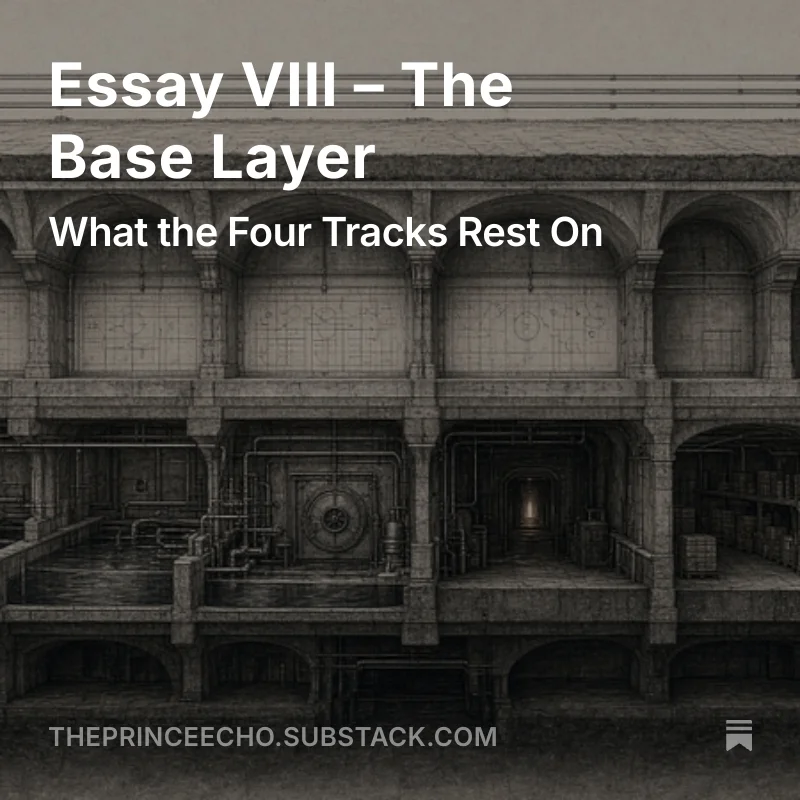
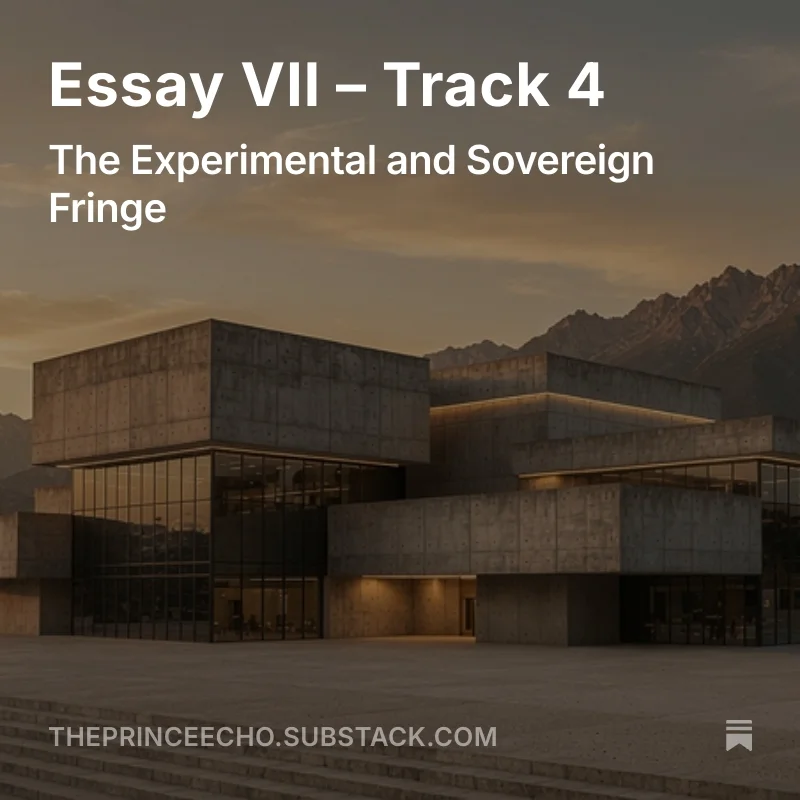
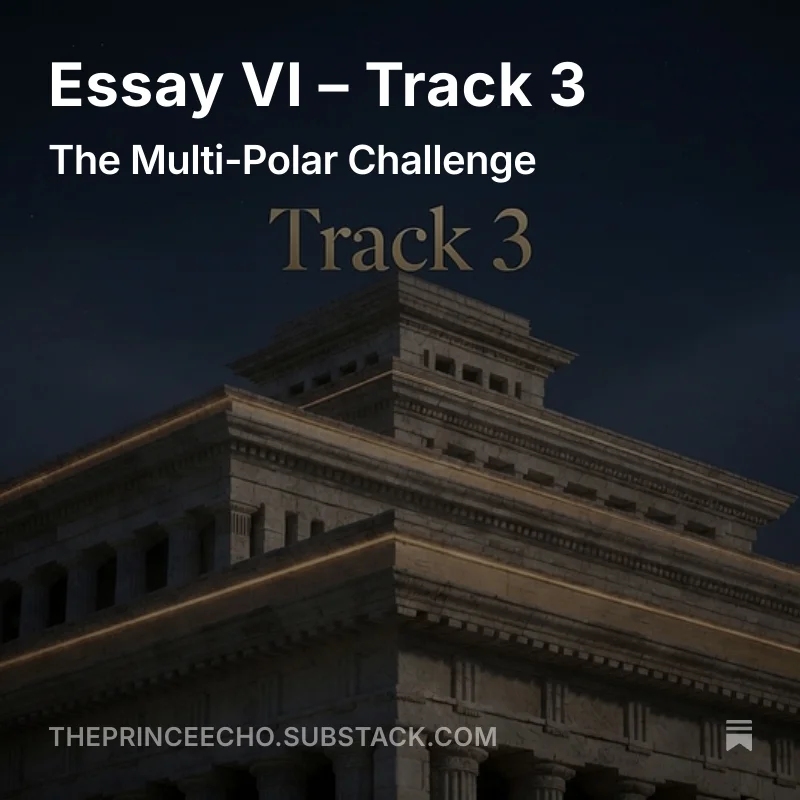
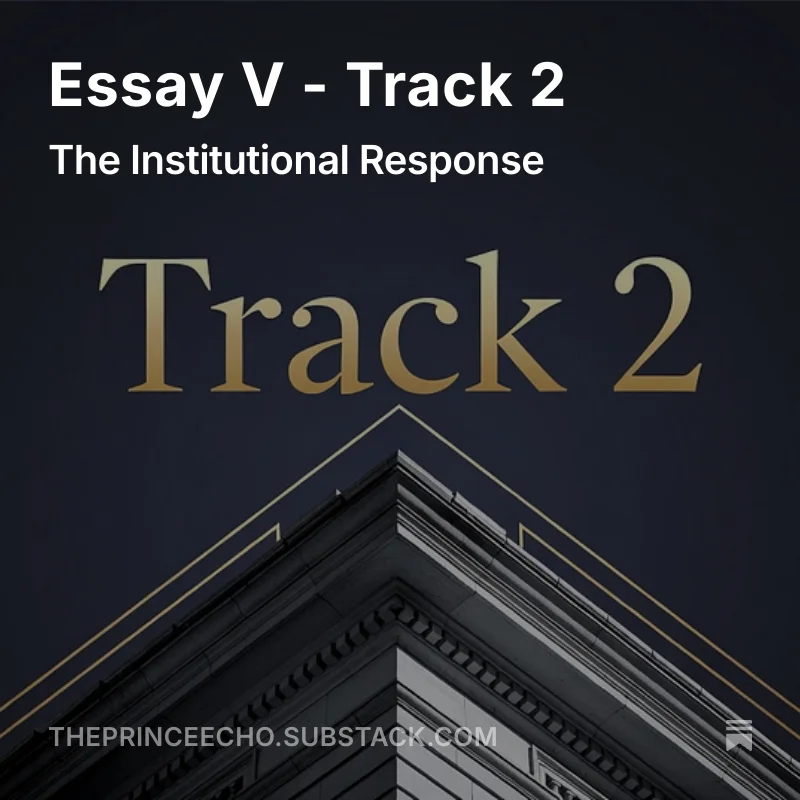
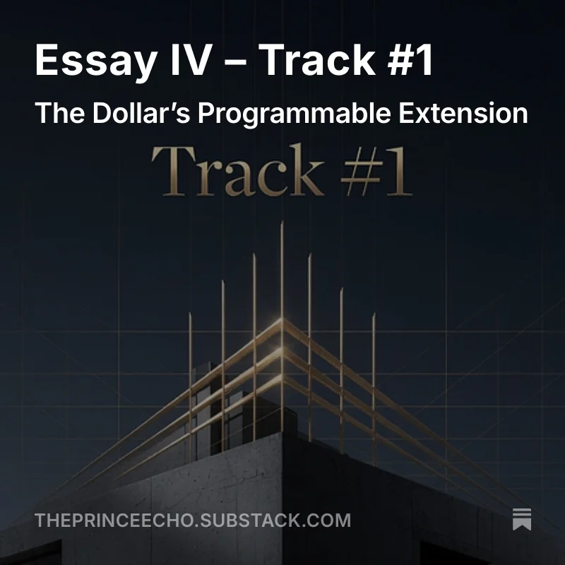
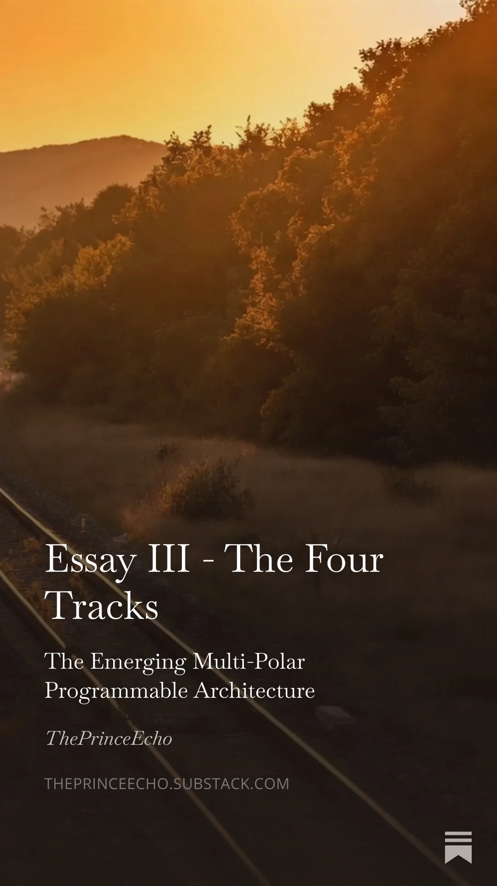
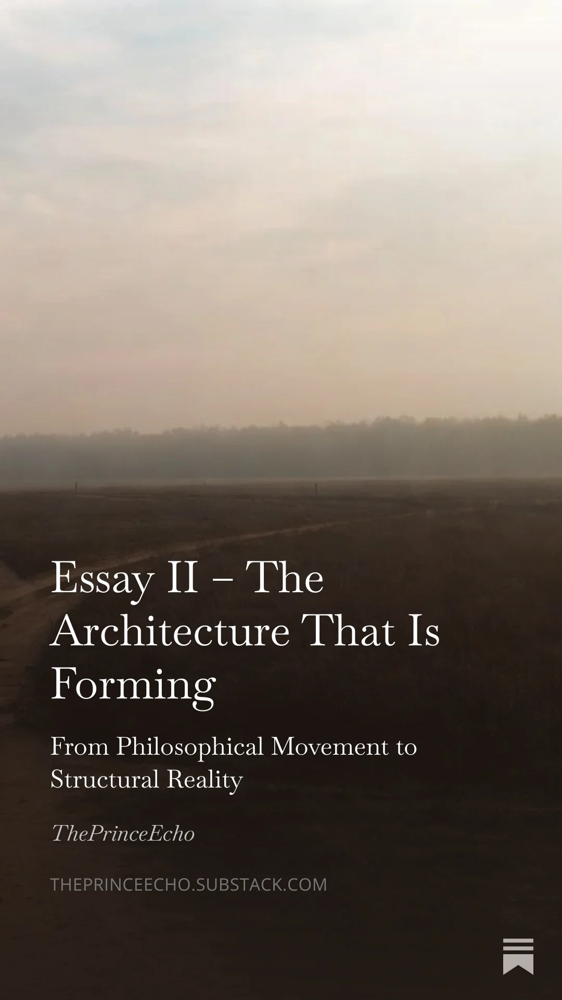
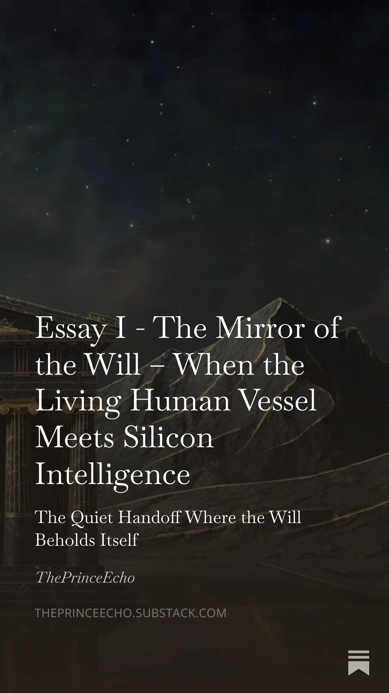

A threshold for those who sense the urge.
A sovereign threshold for those who seek to understand the architecture that is forming.
A place where the noise falls away and clarity remains. This is not another feed. It is a threshold for those who sense that something fundamental is shifting beneath current events.
For decades, the global monetary system operated under a single dominant model, anchored by the dollar. That structure is now fragmenting. States, institutions, and private actors are simultaneously building alternative settlement systems and reducing dependence on legacy rails. What emerges is not one new order, but multiple competing and overlapping architectures of money and power.
In the context of this global shift, ThePrinceEcho functions as a sovereign threshold for those who seek to understand the architecture that is forming. Here, macro cycles, sovereignty, and the emerging rails of programmable money and power are observed without urgency or noise.
You will find two layers of observation:
• Applied short signals on 𝕏.
• Bridge essays for deeper reflection.
Applied short signals
Bridge essays.
Applied short signals — short, sharp daily observations and Prince Notes. Real-time sparks that decode unfolding cycles and offer quiet strategic clarity.
Follow on 𝕏 →Bridge essays — longer-form bridge writing and deeper reflections. For those who wish to go further into the architecture of sovereignty and long-term patterns.
Read on Substack →High-signal observations that cut through noise and distraction.







